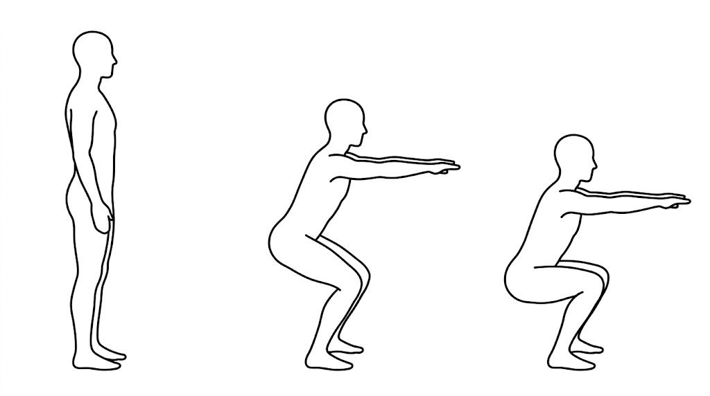
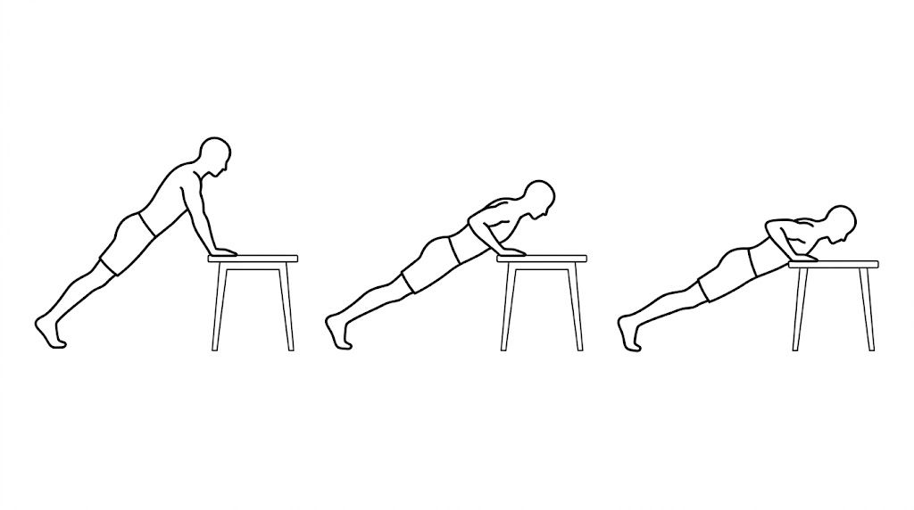
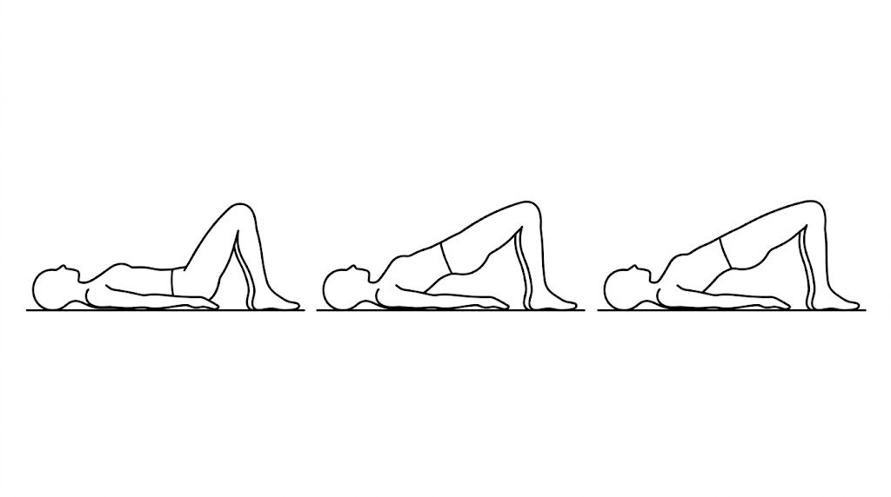
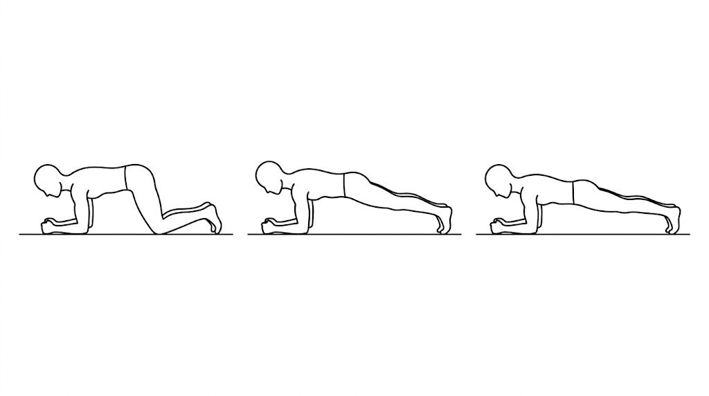
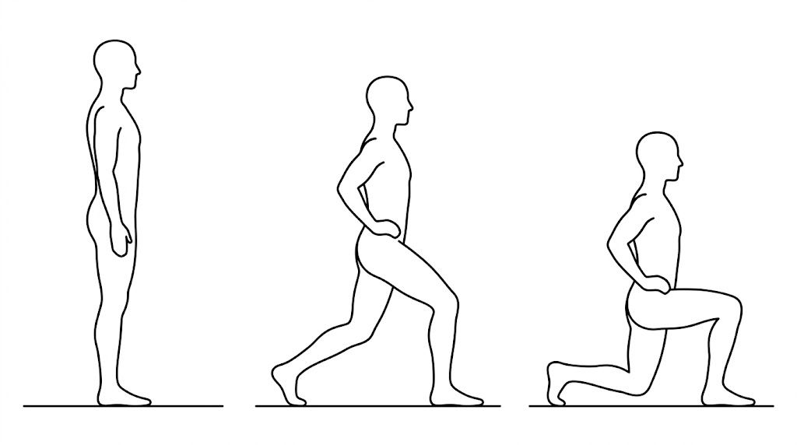
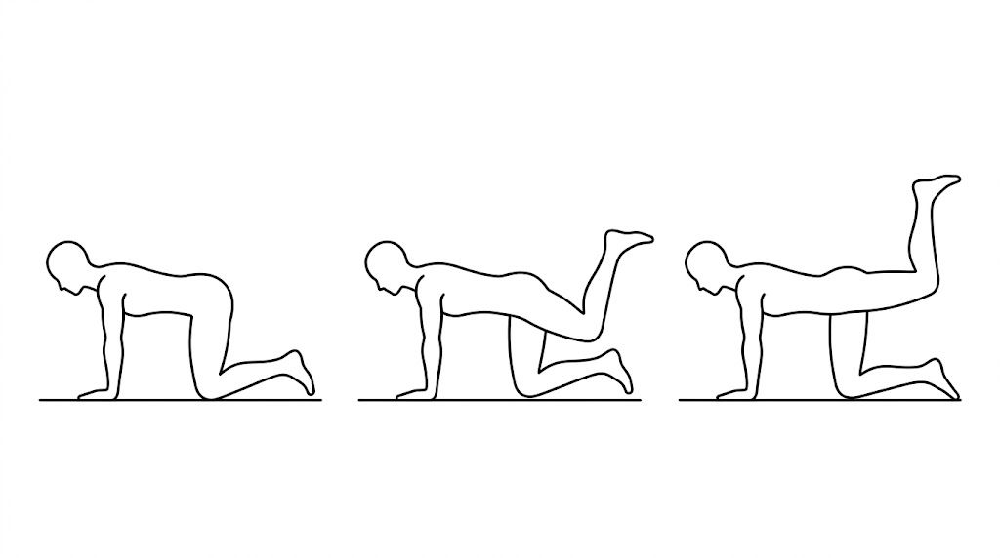

Адаптивные тренировки · демо-макет
Тренировки
в ритме
вашего тела
Планы, которые учитывают цикл, энергию и самочувствие. Без марафонов, рекордов и чувства вины за пропущенный день.
02 / Манифест
Не марафон.
Не гонка.
Ритм.
FitWave — про регулярность, которая дружит с жизнью. Вы отмечаете сигналы тела — план подстраивается. Не наоборот.
03 / Что вы получите
Четыре опоры
-
01
Гибкость вместо жёсткого графика
Мало сил или плохой сон — план снизит интенсивность или предложит восстановительную прогулку.
-
02
Контекст цикла
Отметки в дневнике цикла помогают распределять силы на неделю и месяц, а не подгонять тело под календарь.
-
03
Регулярность, а не истощение
Короткие разминки и понятные базовые движения сохраняют привычку двигаться даже в загруженные недели.
-
04
Прозрачный прогресс
История сессий и самочувствия без оценок и сравнений с чужими результатами.
04 / Как устроен процесс
Четыре шага
к своему ритму
- 01
Профиль
Опыт и комфортные дни — стартовый каркас недели.
- 02
Сигналы тела
Дни цикла и самочувствие — пара нажатий.
- 03
Сессия
План подскажет, где сила, а где мягкая растяжка или пауза.
- 04
Свой темп
История активности в спокойном интерфейсе без лишних метрик.
05 / Почему мы учитываем контекст цикла
Тело меняется.
План тоже.
В течение месяца восприятие нагрузки и потребность в восстановлении меняются. План, который это игнорирует, легко перегружает в один день и вызывает вину в другой.
Расчёты фаз — вероятностные статистические оценки с погрешностью, а не «календарь организма». Это не медицинское заключение.
06 / Техника упражнений
Шесть движений,
три фазы
Демонстрационные схемы из будущего плана: старт, движение, финиш. Показывают логику экрана, а не заменяют тренера.

Приседание
Стопы на ширине плеч · таз назад · опора на всю стопу.

Отжимание от опоры
Ладони на опоре · корпус одной линией · локти назад.

Ягодичный мостик
Стопы на полу · таз вверх · линия корпуса.

Планка
Локти под плечами · живот и ягодицы в тонусе · ровное дыхание.

Выпад
Шаг вперёд · колено под контролем · отталкивание стопой.

Отведение ноги
Четвереньки · нога назад · таз без разворота.
Иллюстрации — ЧЕРНОВИК: сгенерированы ИИ и не заменяют тренера, врача или индивидуальный инструктаж. Не медицинские рекомендации (FW-IR-001).
07 / Безопасность и границы
Безопасность
без мелкого шрифта
- Не медицинский сервис. Никаких диагнозов, лечения, препаратов, контрацепции, фертильности и беременности.
- Сигналы тела — заметки. Они меняют фитнес-нагрузку, но не являются диагнозом.
- Данные только в памяти страницы. Демо ничего не сохраняет и не отправляет.
- Подписка и платежи — заблокированы (CA-B6). Уведомления — заблокированы (CA-O7).
08 / Частые вопросы
Коротко
о важном
FitWave — медицинский сервис?
Нет. Продукт о тренировках: без диагнозов, лечения и медицинских рекомендаций (FW-IR-001). Вопросы здоровья — к врачу.
Что значит «ЧЕРНОВИК»?
Интерактивный макет: показывает будущую логику, но не готовый продукт. Данные не сохраняются и не отправляются.
Когда появится подписка?
Подписка и приём платежей заблокированы (CA-B6) и ждут решения владельца. Цен и платёжных кнопок в макете нет.
Будут ли уведомления?
Уведомления заблокированы (CA-O7). Демо-формы ничего не отправляют: ни писем, ни push, ни SMS.
Нужна ли подготовка?
Схемы показывают базовые движения. Это не программа и не инструкция: при боли, травмах или ограничениях — сначала специалист.
Ваш ритм.
Ваш план.
Пройдите по демо-экранам — без регистрации, платежей и отправки данных.